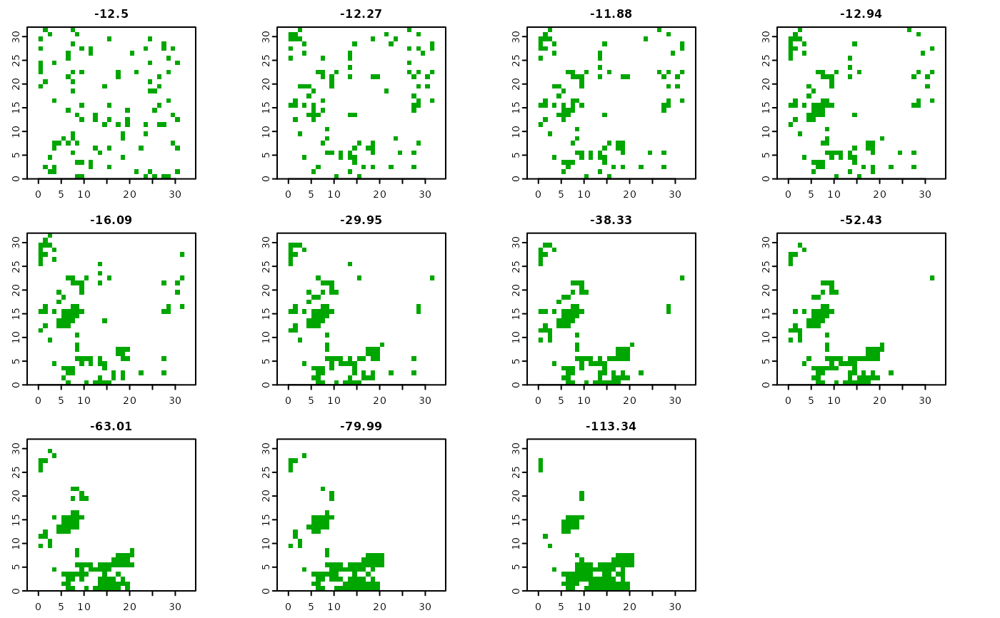

bes_p_cushman.RdCalculates Cushman's configurational entropy for point patterns (2021)
bes_p_cushman(x, nr_of_permutations, independent = FALSE)SpatRaster, stars, RasterLayer, RasterStack, RasterBrick, matrix, or array containing one or more rasters with one value and NAs
Number of permutations performed on each input raster to calculate possible distribution of the number of nearest neighbors
Should an independent set of permutations be performed for each input raster?
TRUE/FALSE.
Use FALSE (default) when each of your input rasters has the same configuration.
A tibble
Cushman, S. A. (2021). Generalizing Boltzmann Configurational Entropy to Surfaces, Point Patterns and Landscape Mosaics. In Entropy (Vol. 23, Issue 12, p. 1616). MDPI AG. https://doi.org/10.3390/e23121616
library(terra)
library(bespatial)
point_pattern = rast(system.file("raster/point_pattern.tif", package = "bespatial"))
ce3 = bes_p_cushman(point_pattern, 100)
plot(point_pattern, main = round(ce3$value, 2))

#ce3b = bes_p_cushman(point_pattern, 100, independent = TRUE)
#plot(point_pattern, main = round(ce3b$value, 2))